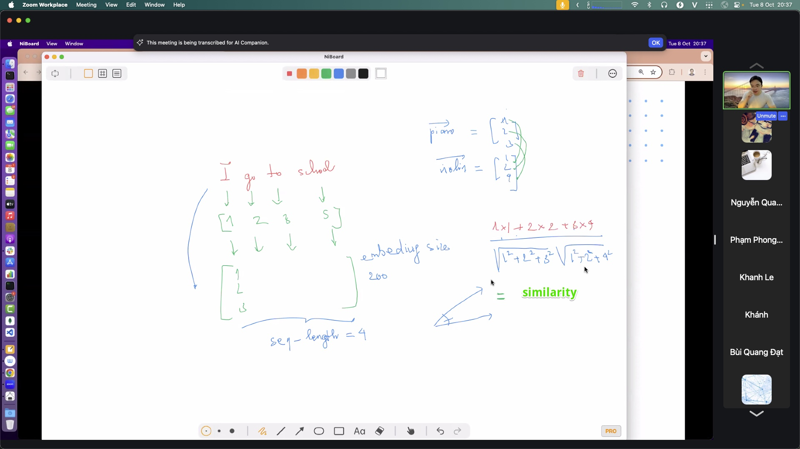

Embedding
Đổi ID thành vector: gần nghĩa thì gần nhau, đo bằng cosine.
#embedding#cosine#CBOW
Embedding
Đổi mỗi token ID thành một dãy số (vector). Điều hay: những gì gần nghĩa thì nằm gần nhau trong không gian số đó.
Vì sao quan trọng
ID chỉ là cái tên đánh số, không mang nghĩa: chó = 812, mèo = 4471 — hai số này ở cạnh nhau hay xa nhau chẳng nói lên điều gì. Embedding thay mỗi ID bằng một vector học được, sao cho "chó" và "mèo" (đều là thú cưng) rơi vào vùng gần nhau, còn "chó" và "hóa đơn" thì xa. Nhờ vậy máy mới "đo" được mức giống nhau về nghĩa — nền của tìm kiếm ngữ nghĩa, phân loại, RAG.
Ý chính
- Vector = tọa độ nghĩa: mỗi token/câu là một điểm trong không gian nhiều chiều (vd 300–1536 chiều). Gần nghĩa → gần điểm.
- Học từ ngữ cảnh: mô hình như CBOW/Word2Vec học vector bằng cách đoán từ dựa trên các từ xung quanh. "Bạn là ai được quyết định bởi những từ hay đứng cạnh bạn."
- Đo độ giống nhau bằng cosine: so hướng của hai vector, không so độ dài. Cùng hướng → cosine ≈ 1 (rất giống); vuông góc → ≈ 0.
- Cosine hay dot-product? Cosine chuẩn hóa độ dài nên hợp khi chỉ quan tâm "cùng chủ đề"; dot-product còn tính cả độ mạnh/độ dài vector.
- Không chỉ cho chữ: ảnh, âm thanh, người dùng… đều có thể embed để so sánh trong cùng một không gian.
Hình minh họa




Trong pipeline
IDs → [embedding] → vectors → { phân loại | attention | tìm top-k cho RAG }
Embedding nhận đầu ra của tokenize.md và cấp "nhiên liệu" cho attention.md lẫn rag.md.
Slides & demo
| Link | |
|---|---|
| Slides | slides/embedding |
| Working app | demos/embedding/app |
Tham khảo
- Google — Machine Learning Crash Course: Embeddings
- Mikolov et al. 2013 — Word2Vec